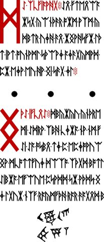
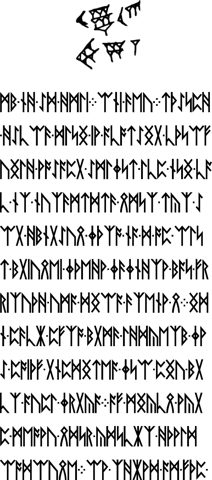
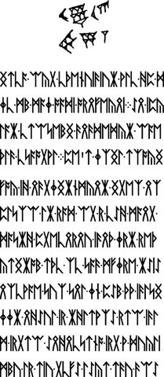
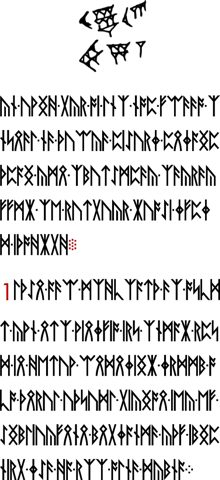
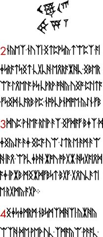
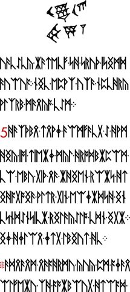
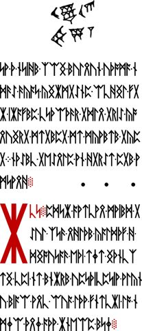

Cuneiform-like mark
Compare the repeated mark on LP2-33–39, including its different placement on the first page.
On this page
A compact, two-row mark repeats on LP2-33–39. It is commonly called the cuneiform mark. The visible mark belongs in an illustrated index even though its intended meaning is not established.


Where to find it
Placement matters. On LP2-33 the mark is at the bottom; on LP2-34–39 it is above the main text. Calling it a “header” without that exception would hide a potentially relevant layout difference. The previews below let you compare all seven sheets.







What the name tells us
The British Museum’s Mesopotamia guide explains how early pictograms developed into wedge-shaped writing called cuneiform. Here it is the community’s name for a visual resemblance. Identifying the manuscript mark as a particular historical sign would require a sign-by-sign comparison with a specified script, period, orientation, and reading. The label alone is not a translation.
The repeated motif is also not part of the ordinary 29-rune Gematria Primus alphabet. Do not assign it a rune index or prime value merely because it occurs beside runic text.
Is cuneiform a language?
Cuneiform is a writing system, not the name of one language. Sumerian, Akkadian, and Hittite were among the languages written with it. Oxford’s Electronic Text Corpus of Sumerian Literature explains that signs could represent words (logograms) or sounds, including syllables (phonograms). A sign could have several reading values; surrounding language and context help determine which one applies.
That distinction matters when investigating this manuscript. Even a convincing match to a historical sign would leave questions about its reading and use here. “It resembles cuneiform” does not tell us whether the mark represents a word, a sound, a decorative motif, or an instruction.
From resemblance to a proposed reading
The following steps separate claims that are easy to blur together. They are a way to document a comparison, not a decipherment of the mark.
| Claim | What to show |
|---|---|
| Visual resemblance | Place the manuscript detail beside the proposed comparison. Preserve orientation and show every rotation or reflection you introduce. |
| Historical sign identification | Cite a sign list or documented inscription, its date and writing tradition. Explain both matching features and differences. |
| Chosen reading | State the language and reading value you select. Explain why you choose it over alternatives. |
| Use in Liber Primus | Show how the proposed reading relates to the surrounding page. A historical meaning alone does not establish the puzzle’s intended use. |
Transliteration records a reading in another writing system; translation expresses meaning in another language. Neither is simply tracing the wedges. In Liberpedia’s transcription guide, the immediate task is more limited: record what is visibly present before interpreting it. Keep a proposed reading separate from that record, and describe any test using the experiment documentation guide.
Reading a sign list’s notation
A number in a scholarly label need not be a number written in the ancient text. Oxford’s ETCSL introduction explains these conventions:
| Notation or term | What it distinguishes |
|---|---|
gu, gu₂, gu₃ | Different signs sharing a phonetic value: homophony. The subscripts distinguish readings; they are not quantities. |
| Determinative | A category marker, such as one preceding a deity’s name. Such markers are thought to have been unpronounced. |
| Superscript | One way ETCSL displays a determinative in transliteration. |
When recording a proposed comparison, preserve the source’s notation and explain it. Do not automatically treat its subscript as a cipher digit, an exponent or a Gematria Primus value. This glossary does not identify any of those signs in the Liber Primus motif.
Other details in this section
LP2-33 and LP2-39 show conspicuous separated black dots. LP2-36–38 include red decimal labels: 1 on page 36, 2–4 on page 37, and 5 on page 38. These observations help locate parts of the section; they do not establish what a dot or label instructs the reader to do. See dots and punctuation for the distinction between printed shapes and transcription notation.
Follow the red numbers across pages
| Page | Visible decimal labels | Placement |
|---|---|---|
| LP2-36 | 1 | At the start of a block below the opening text. |
| LP2-37 | 2, 3, 4 | At successive block starts, from top to bottom. |
| LP2-38 | 5 | Below the opening block, which has no new decimal label. |
This sequence is useful for recording layout before testing a method. A page break, a new text block, and a printed number are separate observations. If you propose restarting a key at one of them, say which one and record its exact rune position. The visual sequence alone does not tell us whether any key should restart. See key advancement and counting conventions and red text and color boundaries.
Are the repeated marks identical?
The six windows on LP2-34–39 have exactly the same decoded RGB pixels. The LP2-33 window differs from each of them at 43,601 of 184,800 pixel positions. This is a comparison of fixed rectangles in the archived originals, including their surrounding whitespace.
| Comparison | Pairs checked | Result |
|---|---|---|
| Every pair among LP2-34–39 | 15 | All corresponding RGB values equal. |
| LP2-33 against each of LP2-34–39 | 6 | 43,601 differing pixels in each comparison. |
A pixel counts as different when at least one of its red, green or blue channel values differs. There is no tolerance, rotation, reflection, resizing or search for a better alignment. All seven complete JPEG files have different SHA-256 hashes: equal decoded windows do not mean identical page files.
The exact windows
Each rectangle is 420 × 440 pixels in a 2400 × 3600 original. Coordinates start at the upper-left corner; x increases rightward and y downward. Right and bottom bounds are excluded, following the image-region convention. The two enlarged details at the top of this guide show these windows on pages 33 and 34.
| Pages | Left, top | Right, bottom | Position |
|---|---|---|---|
| LP2-33 | 1000, 3030 | 1420, 3470 | Below the text |
| LP2-34–39 | 1000, 130 | 1420, 570 | Above the text |
These are comparison windows, not measurements of the exact ink boundary. Their coordinates were chosen after visual inspection, and preliminary equality was observed before the report script was written. This is a descriptive measurement, not a statistical test of an independently selected hypothesis.
Repeat the pixel comparison
Download the reference-data ZIP and original-images ZIP. Extract both into the same folder, preserving their directories. The script needs Python 3 and Pillow; see running the reproduction scripts for setup help. Run these commands from that folder:
python -m pip install Pillow
python scripts/measure_cuneiform_windows.py --checkThe check decodes the seven original JPEGs, compares all 21 pairs, and checks the source-file hashes and measured results against the saved report. It prints PASS only when they agree. It does not modify the images.
Inspect or download the complete comparison report (JSON) and measurement script. The report records every rectangle, source hash, decoded-window hash, differing-pixel count and maximum channel difference. To save a new report without replacing the reference:
python scripts/measure_cuneiform_windows.py --output my-cuneiform-comparison.jsonThe recorded decoder was Pillow 11.3.0 with JPEG codec 8.0. A different version is allowed, but any changed decoded pixels or original-file hashes will fail the check. If that happens, compare decoder versions and verify the downloaded files before interpreting it as a manuscript difference.
What the equality tells us
The six upper-page windows share the same decoded pixel content in this archive. That is stronger than saying they look similar, but it does not identify a historical sign, translate it, or establish how the pages were constructed. The unequal LP2-33 window also does not prove a different sign: placement, surrounding pixels, compression or small visual changes can affect an exact comparison.
No alignment search or comparison outside these rectangles was performed. A claim about the whole motif, its origin or its meaning needs additional evidence. Keep such proposals separate from this repeatable image measurement.
Sources
Cicada Solvers’ LP2 index supplies the community section names and ranges. The page links above provide original images, checksums, and pinned archive sources. Section names are descriptive navigation labels, not decrypted headings.
For red headings, numbers, and marks, see rubrication and color boundaries, with illustrated examples and guidance for recording a proposed extraction.
The proposed word carrier
This group is included in the 928-word carrier audit, alongside the other groups spanning LP2-23–39. The guide gives exact page ranges, separates decimal labels, locates the halfway split and explains what remains unspecified in a grille proposal.
Manuscript pages discussed
LP2-33 · LP2-34 · LP2-35 · LP2-36 · LP2-37 · LP2-38 · LP2-39